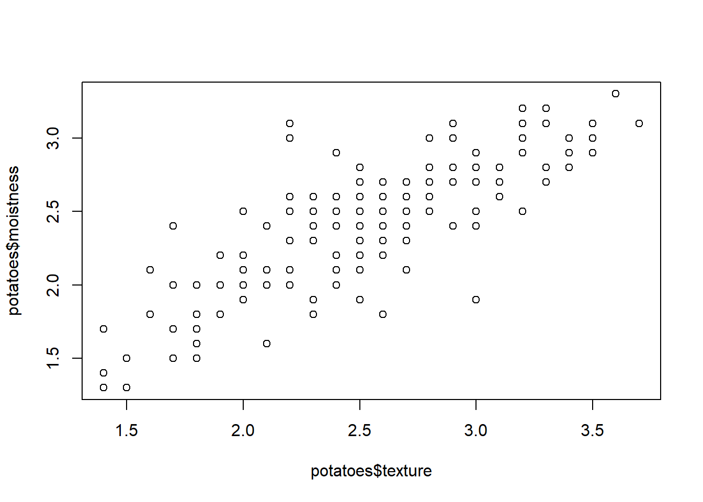

install.packages("readr",repos = "http://cran.us.r-project.org")Introduction to Importing Data in R
Course Description: Importing data into R should be the easiest step in your analysis. Unfortunately, that is almost never the case. Data can come in many formats, ranging from .csv and text files, to statistical software files, to databases and HTML data. Knowing which approach to use is key to getting started with the actual analysis. In this course, you’ll start by learning how to read .csv and text files in R. You will then cover the readr and data.table packages to easily and efficiently import flat file data. After that, you will learn how to read .xls files in R using readxl and gdata.
Importing data from flat files with utils
A lot of data comes in the form of flat files: simple tabular text files. Learn how to import the common formats of flat file data with base R functions.
Required packages
install.packages("data.table",repos = "http://cran.us.r-project.org")read.csv
The utils package, which is automatically loaded in your R session on startup, can import CSV files with the read.csv() function.
Use
read.csv()to import"swimming_pools.csv"as a data frame with the namepools.Print the structure of
poolsusingstr().
# Import swimming_pools.csv: pools
pools <- read.csv("swimming_pools.csv")
# Print the structure of pools
str(pools)'data.frame': 20 obs. of 4 variables:
$ Name : chr "Acacia Ridge Leisure Centre" "Bellbowrie Pool" "Carole Park" "Centenary Pool (inner City)" ...
$ Address : chr "1391 Beaudesert Road, Acacia Ridge" "Sugarwood Street, Bellbowrie" "Cnr Boundary Road and Waterford Road Wacol" "400 Gregory Terrace, Spring Hill" ...
$ Latitude : num -27.6 -27.6 -27.6 -27.5 -27.4 ...
$ Longitude: num 153 153 153 153 153 ...stringsAsFactors
With stringsAsFactors, you can tell R whether it should convert strings in the flat file to factors.
For all importing functions in the utils package, this argument is TRUE, which means that you import strings as factors. This only makes sense if the strings you import represent categorical variables in R. If you set stringsAsFactors to FALSE, the data frame columns corresponding to strings in your text file will be character.
Use
read.csv()to import the data in"swimming_pools.csv"as a data frame calledpools; make sure that strings are imported as characters, not as factors.Using
str(), display the structure of the dataset and check that you indeed get character vectors instead of factors.
# Import swimming_pools.csv correctly: pools
pools <- read.csv("swimming_pools.csv", stringsAsFactors = FALSE)
# Check the structure of pools
str(pools)'data.frame': 20 obs. of 4 variables:
$ Name : chr "Acacia Ridge Leisure Centre" "Bellbowrie Pool" "Carole Park" "Centenary Pool (inner City)" ...
$ Address : chr "1391 Beaudesert Road, Acacia Ridge" "Sugarwood Street, Bellbowrie" "Cnr Boundary Road and Waterford Road Wacol" "400 Gregory Terrace, Spring Hill" ...
$ Latitude : num -27.6 -27.6 -27.6 -27.5 -27.4 ...
$ Longitude: num 153 153 153 153 153 ...Any changes?
Consider the code below that loads data from swimming_pools.csv in two distinct ways:
# Option A pools <- read.csv("swimming_pools.csv", stringsAsFactors = TRUE)
# Option B pools <- read.csv("swimming_pools.csv", stringsAsFactors = FALSE) How many variables in the resulting pools data frame have different types if you specify the stringsAsFactors argument differently?
read.delim
Aside from .csv files, there are also the .txt files which are basically text files. You can import these functions with read.delim(). By default, it sets the sep argument to "\t" (fields in a record are delimited by tabs) and the header argument to TRUE (the first row contains the field names).
Import the data in
"hotdogs.txt"withread.delim(). Call the resulting data framehotdogs. The variable names are not on the first line, so make sure to set theheaderargument appropriately.Call
summary()onhotdogs. This will print out some summary statistics about all variables in the data frame.
# Import hotdogs.txt: hotdogs
hotdogs <- read.delim("hotdogs.txt", header = FALSE)
# Summarize hotdogs
summary(hotdogs) V1 V2 V3
Length:54 Min. : 86.0 Min. :144.0
Class :character 1st Qu.:132.0 1st Qu.:362.5
Mode :character Median :145.0 Median :405.0
Mean :145.4 Mean :424.8
3rd Qu.:172.8 3rd Qu.:503.5
Max. :195.0 Max. :645.0 read.table
If you’re dealing with more exotic flat file formats, you’ll want to use read.table(). It’s the most basic importing function; you can specify tons of different arguments in this function. Unlike read.csv() and read.delim(), the header argument defaults to FALSE and the sep argument is "" by default.
Finish the
read.table()call that’s been prepared for you. Use thepathvariable, and make sure to setsepcorrectly.Call
head()onhotdogs; this will print the first 6 observations in the data frame.
# Path to the hotdogs.txt file: path
path <- file.path("data", "hotdogs.txt")
# Import the hotdogs.txt file: hotdogs
hotdogs <- read.table(path,
sep = "\t",
col.names = c("type", "calories", "sodium"))
# Call head() on hotdogs
head(hotdogs) type calories sodium
1 Beef 186 495
2 Beef 181 477
3 Beef 176 425
4 Beef 149 322
5 Beef 184 482
6 Beef 190 587Arguments
Lily and Tom are having an argument because they want to share a hot dog but they can’t seem to agree on which one to choose. After some time, they simply decide that they will have one each. Lily wants to have the one with the fewest calories while Tom wants to have the one with the most sodium.
Next to calories and sodium, the hotdogs have one more variable: type. This can be one of three things: Beef, Meat, or Poultry, so a categorical variable: a factor is fine.
Finish the
read.delim()call to import the data in"hotdogs.txt". It’s a tab-delimited file without names in the first row.The code that selects the observation with the lowest calorie count and stores it in the variable
lilyis already available. It uses the functionwhich.min(), that returns the index the smallest value in a vector.Do a similar thing for Tom: select the observation with the most sodium and store it in
tom. Usewhich.max()this time.Finally, print both the observations
lilyandtom.
# Finish the read.delim() call
hotdogs <- read.delim("hotdogs.txt", header = FALSE, col.names = c("type", "calories", "sodium"))
# Select the hot dog with the least calories: lily
lily <- hotdogs[which.min(hotdogs$calories), ]
# Select the observation with the most sodium: tom
tom <- hotdogs[which.max(hotdogs$sodium), ]
# Print lily and tom
lily type calories sodium
50 Poultry 86 358tom type calories sodium
15 Beef 190 645Column classes
Next to column names, you can also specify the column types or column classes of the resulting data frame. You can do this by setting the colClasses argument to a vector of strings representing classes:
read.delim("my_file.txt",
colClasses = c("character",
"numeric",
"logical")) This approach can be useful if you have some columns that should be factors and others that should be characters. You don’t have to bother with stringsAsFactors anymore; just state for each column what the class should be.
If a column is set to "NULL" in the colClasses vector, this column will be skipped and will not be loaded into the data frame.
The
read.delim()call from before is already included and creates thehotdogsdata frame. Go ahead and display the structure ofhotdogs.Edit the second
read.delim()call. Assign the correct vector to thecolClassesargument.NAshould be replaced with a character vector:c("factor", "NULL", "numeric").Display the structure of
hotdogs2and look for the difference.
# Previous call to import hotdogs.txt
hotdogs <- read.delim("hotdogs.txt", header = FALSE, col.names = c("type", "calories", "sodium"))
# Display structure of hotdogs
str(hotdogs)'data.frame': 54 obs. of 3 variables:
$ type : chr "Beef" "Beef" "Beef" "Beef" ...
$ calories: int 186 181 176 149 184 190 158 139 175 148 ...
$ sodium : int 495 477 425 322 482 587 370 322 479 375 ...# Edit the colClasses argument to import the data correctly: hotdogs2
hotdogs2 <- read.delim("hotdogs.txt", header = FALSE,
col.names = c("type", "calories", "sodium"),
colClasses = c("factor", "NULL", "numeric"))
# Display structure of hotdogs2
str(hotdogs2)'data.frame': 54 obs. of 2 variables:
$ type : Factor w/ 3 levels "Beef","Meat",..: 1 1 1 1 1 1 1 1 1 1 ...
$ sodium: num 495 477 425 322 482 587 370 322 479 375 ...read_csv
CSV files can be imported with read_csv(). It’s a wrapper function around read_delim() that handles all the details for you. For example, it will assume that the first row contains the column names.
# Load the readr package
library(readr)
# Import potatoes.csv with read_csv(): potatoes
potatoes <- read_csv("potatoes.csv")Rows: 160 Columns: 8
── Column specification ────────────────────────────────────────────────────────
Delimiter: ","
dbl (8): area, temp, size, storage, method, texture, flavor, moistness
ℹ Use `spec()` to retrieve the full column specification for this data.
ℹ Specify the column types or set `show_col_types = FALSE` to quiet this message.read_tsv
Where you use read_csv() to easily read in CSV files, you use read_tsv() to easily read in TSV files. TSV is short for tab-separated values.
Use
read_tsv()to import the potatoes data frompotatoes.txtand store it in the data framepotatoes. In addition to the path to the file, you’ll also have to specify thecol_namesargument; you can use thepropertiesvector for this.Call
head()onpotatoesto show the first observations of your dataset.
# Column names
properties <- c("area", "temp", "size", "storage", "method",
"texture", "flavor", "moistness")
# Import potatoes.txt: potatoes
potatoes <- read_tsv("potatoes.txt", col_names = properties)Rows: 160 Columns: 8
── Column specification ────────────────────────────────────────────────────────
Delimiter: "\t"
dbl (8): area, temp, size, storage, method, texture, flavor, moistness
ℹ Use `spec()` to retrieve the full column specification for this data.
ℹ Specify the column types or set `show_col_types = FALSE` to quiet this message.# Call head() on potatoes
head(potatoes)# A tibble: 6 × 8
area temp size storage method texture flavor moistness
<dbl> <dbl> <dbl> <dbl> <dbl> <dbl> <dbl> <dbl>
1 1 1 1 1 1 2.9 3.2 3
2 1 1 1 1 2 2.3 2.5 2.6
3 1 1 1 1 3 2.5 2.8 2.8
4 1 1 1 1 4 2.1 2.9 2.4
5 1 1 1 1 5 1.9 2.8 2.2
6 1 1 1 2 1 1.8 3 1.7read_delim
Just as read.table() was the main utils function, read_delim() is the main readr function.
read_delim() takes two mandatory arguments:
file: the file that contains the datadelim: the character that separates the values in the data file
As before, the vector properties is available to set the col_names.
Import all the data in
"potatoes.txt"usingread_delim(); store the resulting data frame inpotatoes.Print out
potatoes.
# Column names
properties <- c("area", "temp", "size", "storage", "method",
"texture", "flavor", "moistness")
# Import potatoes.txt using read_delim(): potatoes
potatoes <- read_delim("potatoes.txt", delim = "\t", col_names = properties)Rows: 160 Columns: 8
── Column specification ────────────────────────────────────────────────────────
Delimiter: "\t"
dbl (8): area, temp, size, storage, method, texture, flavor, moistness
ℹ Use `spec()` to retrieve the full column specification for this data.
ℹ Specify the column types or set `show_col_types = FALSE` to quiet this message.# Print out potatoes
potatoes# A tibble: 160 × 8
area temp size storage method texture flavor moistness
<dbl> <dbl> <dbl> <dbl> <dbl> <dbl> <dbl> <dbl>
1 1 1 1 1 1 2.9 3.2 3
2 1 1 1 1 2 2.3 2.5 2.6
3 1 1 1 1 3 2.5 2.8 2.8
4 1 1 1 1 4 2.1 2.9 2.4
5 1 1 1 1 5 1.9 2.8 2.2
6 1 1 1 2 1 1.8 3 1.7
7 1 1 1 2 2 2.6 3.1 2.4
8 1 1 1 2 3 3 3 2.9
9 1 1 1 2 4 2.2 3.2 2.5
10 1 1 1 2 5 2 2.8 1.9
# ℹ 150 more rowsskip and n_max
Through skip and n_max you can control which part of your flat file you’re actually importing into R.
skipspecifies the number of lines you’re ignoring in the flat file before actually starting to import data.n_maxspecifies the number of lines you’re actually importing.
Say for example you have a CSV file with 20 lines, and set skip = 2 and n_max = 3, you’re only reading in lines 3, 4 and 5 of the file.
Watch out: Once you skip some lines, you also skip the first line that can contain column names!
- Finish the first
read_tsv()call to import observations 7, 8, 9, 10 and 11 frompotatoes.txt.
# Column names
properties <- c("area", "temp", "size", "storage", "method",
"texture", "flavor", "moistness")
# Import 5 observations from potatoes.txt: potatoes_fragment
potatoes_fragment <- read_tsv("potatoes.txt", skip = 6, n_max = 5, col_names = properties)Rows: 5 Columns: 8
── Column specification ────────────────────────────────────────────────────────
Delimiter: "\t"
dbl (8): area, temp, size, storage, method, texture, flavor, moistness
ℹ Use `spec()` to retrieve the full column specification for this data.
ℹ Specify the column types or set `show_col_types = FALSE` to quiet this message.col_types
You can also specify which types the columns in your imported data frame should have. You can do this with col_types. If set to NULL, the default, functions from the readr package will try to find the correct types themselves. You can manually set the types with a string, where each character denotes the class of the column: character, double, integer and logical. _ skips the column as a whole.
In the second
read_tsv()call, edit thecol_typesargument to import all columns as characters (c). Store the resulting data frame inpotatoes_char.Print out the structure of
potatoes_charand verify whether all column types arechr, short forcharacter.
# Column names
properties <- c("area", "temp", "size", "storage", "method",
"texture", "flavor", "moistness")
# Import all data, but force all columns to be character: potatoes_char
potatoes_char <- read_tsv("potatoes.txt", col_types = "cccccccc", col_names = properties)
# Print out structure of potatoes_char
str(potatoes_char)spc_tbl_ [160 × 8] (S3: spec_tbl_df/tbl_df/tbl/data.frame)
$ area : chr [1:160] "1" "1" "1" "1" ...
$ temp : chr [1:160] "1" "1" "1" "1" ...
$ size : chr [1:160] "1" "1" "1" "1" ...
$ storage : chr [1:160] "1" "1" "1" "1" ...
$ method : chr [1:160] "1" "2" "3" "4" ...
$ texture : chr [1:160] "2.9" "2.3" "2.5" "2.1" ...
$ flavor : chr [1:160] "3.2" "2.5" "2.8" "2.9" ...
$ moistness: chr [1:160] "3.0" "2.6" "2.8" "2.4" ...
- attr(*, "spec")=
.. cols(
.. area = col_character(),
.. temp = col_character(),
.. size = col_character(),
.. storage = col_character(),
.. method = col_character(),
.. texture = col_character(),
.. flavor = col_character(),
.. moistness = col_character()
.. )
- attr(*, "problems")=<externalptr> col_types with collectors
Another way of setting the types of the imported columns is using collectors. Collector functions can be passed in a list() to the col_types argument of read_ functions to tell them how to interpret values in a column.
For a complete list of collector functions, you can take a look at the collector documentation. For this exercise you will need two collector functions:
col_integer(): the column should be interpreted as an integer.col_factor(levels, ordered = FALSE): the column should be interpreted as a factor withlevels.
hotdogsis created for you without setting the column types. Inspect its summary using thesummary()function.Two collector functions are defined for you:
facandint. Have a look at them, do you understand what they’re collecting?In the second
read_tsv()call, edit thecol_typesargument: Pass alist()with the elementsfac,intandint, so the first column is imported as a factor, and the second and third column as integers.Create a
summary()ofhotdogs_factor. Compare this to the summary ofhotdogs.
# Import without col_types
hotdogs <- read_tsv("hotdogs.txt", col_names = c("type", "calories", "sodium"))Rows: 54 Columns: 3
── Column specification ────────────────────────────────────────────────────────
Delimiter: "\t"
chr (1): type
dbl (2): calories, sodium
ℹ Use `spec()` to retrieve the full column specification for this data.
ℹ Specify the column types or set `show_col_types = FALSE` to quiet this message.# Display the summary of hotdogs
summary(hotdogs) type calories sodium
Length:54 Min. : 86.0 Min. :144.0
Class :character 1st Qu.:132.0 1st Qu.:362.5
Mode :character Median :145.0 Median :405.0
Mean :145.4 Mean :424.8
3rd Qu.:172.8 3rd Qu.:503.5
Max. :195.0 Max. :645.0 # The collectors you will need to import the data
fac <- col_factor(levels = c("Beef", "Meat", "Poultry"))
int <- col_integer()
# Edit the col_types argument to import the data correctly: hotdogs_factor
hotdogs_factor <- read_tsv("hotdogs.txt",
col_names = c("type", "calories", "sodium"),
col_types = list(fac, int, int))
# Display the summary of hotdogs_factor
summary(hotdogs_factor) type calories sodium
Beef :20 Min. : 86.0 Min. :144.0
Meat :17 1st Qu.:132.0 1st Qu.:362.5
Poultry:17 Median :145.0 Median :405.0
Mean :145.4 Mean :424.8
3rd Qu.:172.8 3rd Qu.:503.5
Max. :195.0 Max. :645.0 fread
You still remember how to use read.table(), right? Well, fread() is a function that does the same job with very similar arguments. It is extremely easy to use and blazingly fast! Often, simply specifying the path to the file is enough to successfully import your data.
Use
library()to load (NOT install) thedata.tablepackage. You do not need to install the package, it is already installed on DataCamp’s servers.Import
"potatoes.csv"withfread(). Simply pass it the file path and see if it worked. Store the result in a variablepotatoes.Print out
potatoes.
# load the data.table package using library()
library(data.table)
# Import potatoes.csv with fread(): potatoes
potatoes <- fread("potatoes.csv")
# Print out potatoes
potatoes area temp size storage method texture flavor moistness
1: 1 1 1 1 1 2.9 3.2 3.0
2: 1 1 1 1 2 2.3 2.5 2.6
3: 1 1 1 1 3 2.5 2.8 2.8
4: 1 1 1 1 4 2.1 2.9 2.4
5: 1 1 1 1 5 1.9 2.8 2.2
---
156: 2 2 2 4 1 2.7 3.3 2.6
157: 2 2 2 4 2 2.6 2.8 2.3
158: 2 2 2 4 3 2.5 3.1 2.6
159: 2 2 2 4 4 3.4 3.3 3.0
160: 2 2 2 4 5 2.5 2.8 2.3fread: more advanced use
Now that you know the basics about fread(), you should know about two arguments of the function: drop and select, to drop or select variables of interest.
Suppose you have a dataset that contains 5 variables and you want to keep the first and fifth variable, named “a” and “e”. The following options will all do the trick:
fread("path/to/file.txt", drop = 2:4)
fread("path/to/file.txt", select = c(1, 5))
fread("path/to/file.txt", drop = c("b", "c", "d"))
fread("path/to/file.txt", select = c("a", "e")) Using
fread()andselectordropas arguments, only import thetextureandmoistnesscolumns of the flat file. They correspond to the columns 6 and 8 in"potatoes.csv". Store the result in a variablepotatoes.plot()2 columns of thepotatoesdata frame:textureon the x-axis,moistnesson the y-axis. Use the dollar sign notation twice. Feel free to name your axes and plot.
# Import columns 6 and 8 of potatoes.csv: potatoes
potatoes <- fread("potatoes.csv", select = c(6, 8))
# Plot texture (x) and moistness (y) of potatoes
plot(x = potatoes$texture, y = potatoes$moistness)